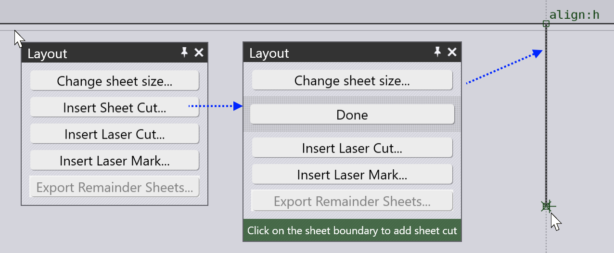
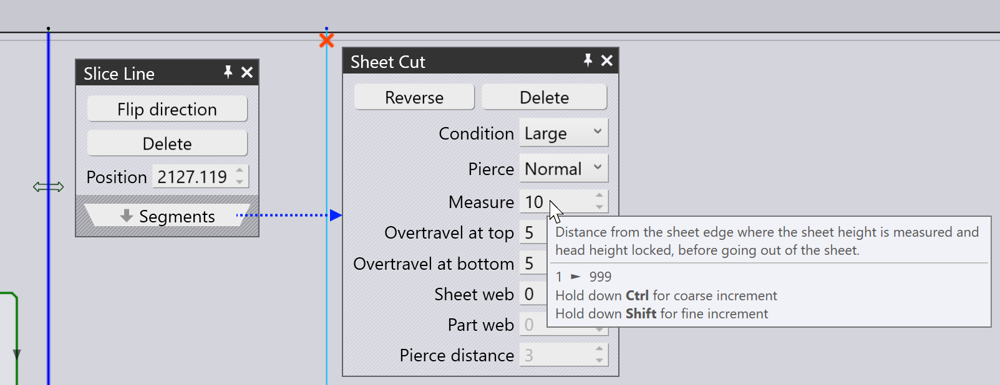

Slice sheet
If a sheet is only partially nested, you can add a SliceLine to trim off an unused rectangular section of sheet, and that can be used as the raw material for a future nesting job. The Skeleton Cuts page of the the TecZone settings can be used to configure automatic creation of a sheet-slice cut if there is enough of a sheet remnant left.
Sheet slicing from the layout panel
You can also manually add a sheet-slice cut from the Layout panel. To bring up this panel, click close to the boundary of the sheet. Alternatively, click on any part to open the Placement panel and then click on the Layout navigation button there.

The image above shows the steps to add a sheet slice manually.
-
Click near the margin to open the Layout panel.
-
Click on the Insert sheet cut button to switch to the sheet cut mode.
-
Click on the sheet boundary and then use the horizontal or vertical snaps to draw a precise horizontal or vertical line. You do not need to extend this line all the way to the other edge of the sheet - when you click again, the line is automatically extended to become and end-to-end sheet cut.
You can use the same function to add a Skeleton cuts as well. Just draw a line and it will automatically be split into segments, cutting only the skeleton of the sheet remaining after all the parts are cut:

Editing slice cuts
You can click on the slice cut to bring up the Slice Line editor:

-
Click on the slice line and drag it to reposition. You can also drag it behind parts and the boundaries of the line with the parts on the layout will be automatically recomputed.
-
Click on Flip direction to reverse the direction, or Delete to remove the slice line.
-
Click on Segments to do more detailed editing of the slice line.
-
Use Condition and Pierce to choose the cutting condition and the type of pierce.
-
When starting or finishing a cut near the boundary of the sheet, it is important to manage the height sensor of the laser head. Typically a measurement is made at a point a few mm inside the sheet (shown by the red cross in the image above), and indicated by the Measure parameter. Then, the head height is locked, it moves out to the pierce location and then comes back to the measurement point without the height sensor engaged before continuing the cut.
-
The Overtravel settings set up the amount by which the slice sheet cut extends beyond the sheet boundary at the top and at the bottom.
-
The Sheet web setting creates a microjoint of the specified size at the top and bottom of the sheet.
-
The Part web is the microjoint created between the slice line and the boundary of any existing part.
-
The Pierce distance is the distance of the pierce points from the edge of the part. A pierce happens at this distance from the part, then the nozzle approaches the part until it is at the Part web distance from the part, then makes a 180 degree turn and proceeds to continue the cut.